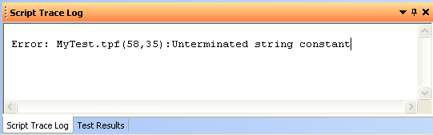
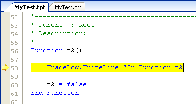

If a script error is generated when the test program is run, an error message will be displayed in the Script Trace Log window. To quickly navigate to the line where this error occurred, double-click on the error message in the Script Trace Log window. The line with the error will be highlighted in yellow in the Script View window. You may now make any necessary changes to correct the error and re-run the program.
Example:
A script error occurred in our test script file, MyTest.tpf. Double-click anywhere on the error message in the Script Trace Log box.

|  | The line with the error is highlighted in the Script View window. Here, the string "In Function t2" is missing the terminating quotation marks ("). We simply add the quote marks and re-run the test program. |
See Also
Script Trace Log Window | Using the Tracelog Object
Astronics Test Systems
Last updated on 1/26/06 by L. Anhalt